Keep the real work
AI conversations are no longer disposable prompts. They are where strategy gets debated, ideas get tested, and half-finished thinking sharpens into something usable.
Local-first AI memory
Vesti captures conversations across major AI platforms, keeps the archive on your device, and turns scattered sessions into something you can search, classify, trace, and return to when the work matters.
Open-source from day one, with local storage, export controls, and retrieval grounded in your own history.
Archive field
Motion is used here as evidence and atmosphere: sources, notes, recall paths, and semantic links, not a dashboard ticker pretending to be product depth.
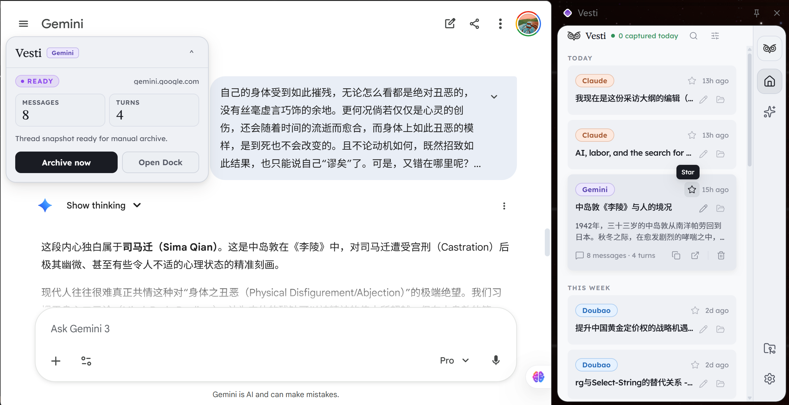
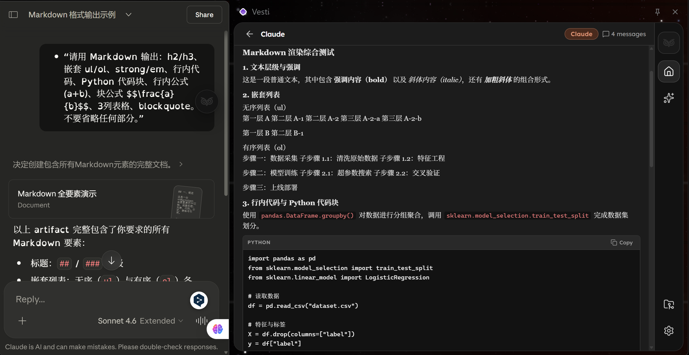
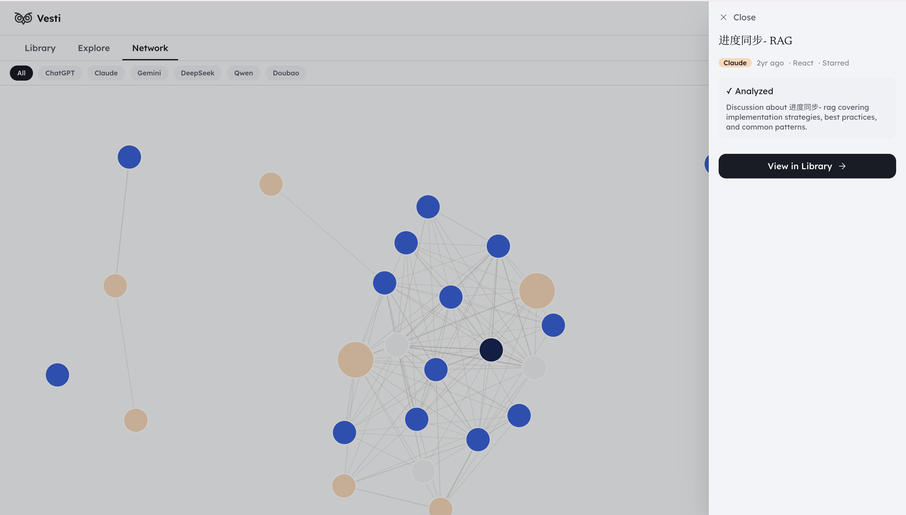
Why Vesti
Vesti is built for people who already use AI as part of writing, research, planning, and product work, but do not want their own thinking to stay trapped inside six separate histories.
Keep the real work
AI conversations are no longer disposable prompts. They are where strategy gets debated, ideas get tested, and half-finished thinking sharpens into something usable.
Choose the signal
Local-first does not have to mean hoard everything. Vesti keeps control over what becomes memory, how much automation is allowed in, and when a session deserves curation.
Follow meaning forward
A useful archive is not a pile of transcripts. It is a system that can reconnect themes, show where a claim came from, and help you return to the line of thought that mattered.
Workflow
Vesti starts quietly on the page, expands into quick control, opens into cross-platform browsing, and then hands you a deeper dashboard for retrieval, graph structure, and long-form notes.
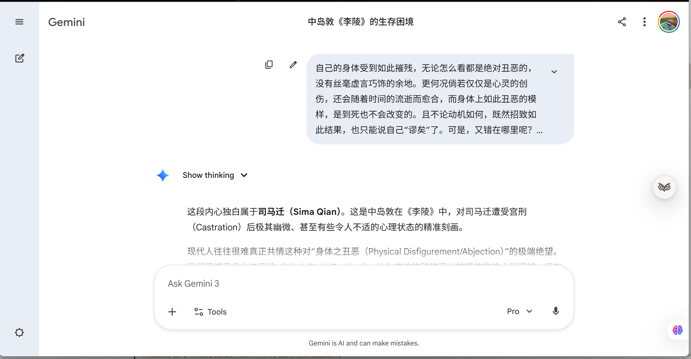
01
The capsule stays present on supported AI pages and exposes capture state without hijacking the session.
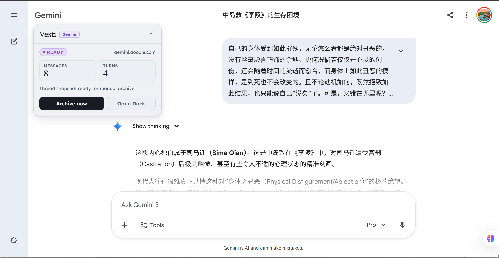
02
Expand the capsule to archive manually, inspect state, or move directly into the broader system.
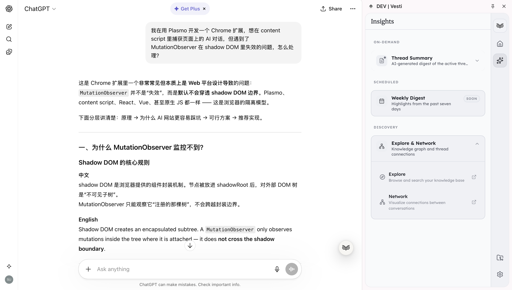
03
The browser sidebar becomes the fast surface for search, summaries, status, and direct recall.
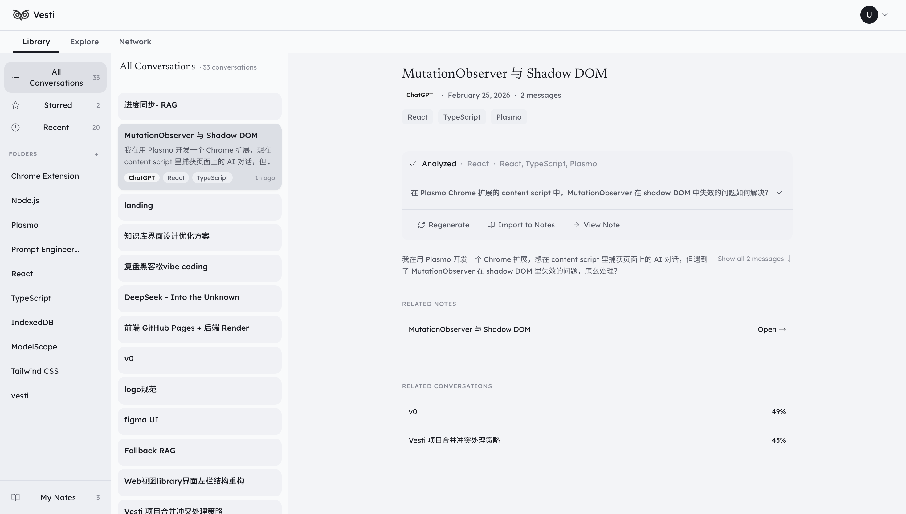
04
The dashboard adds semantic exploration, graph structure, manual curation, and longer-lived notes.
Capabilities
Capture engine
The extension listens across ChatGPT, Claude, Gemini, DeepSeek, Qwen, and Doubao. It stores conversations locally, avoids duplicates, and supports mirrored, filtered, or manual archive modes.
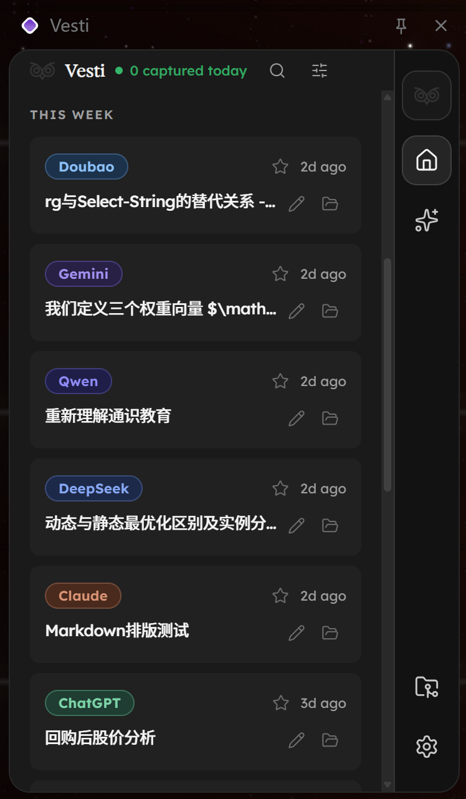
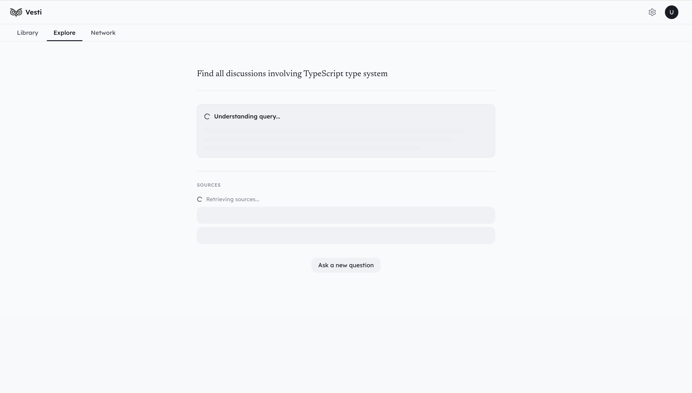
Explore / RAG
Explore turns a personal conversation history into a retrieval surface, then keeps the supporting sources visible instead of pretending the answer appeared from nowhere.
Network
A force-directed graph and similarity edges reveal recurring themes, semantic neighbors, and where separate sessions belong to the same line of inquiry.

Notes
Notes close the loop between retrieval and synthesis, giving users a place to turn captured dialogue into something more deliberate than a chat transcript.
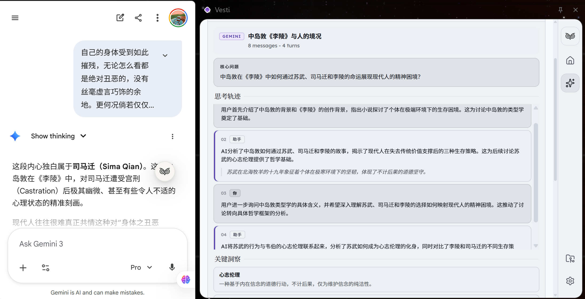
Insights + Gardener
Structured summaries, topic assignment, and agent steps are designed to stay visible enough for users to understand what the system is doing on their behalf.
Architecture
Vesti is intentionally split so the capture layer can stay close to AI platforms while the dashboard stays focused on retrieval, organization, and long-form knowledge work.
Layer 01
The Chrome extension handles platform parsing, capture state, summaries, classification jobs, vectorization work, and IndexedDB persistence.
Layer 02
The dashboard is a separate surface for Library, Explore, Network, and Notes so UI work can stay storage-implementation agnostic while the archive model stays coherent.
Trust and boundaries
Vesti is useful because it helps you return to your own thinking, not because it captures your history for someone else. That means exportability, explicit capture control, and honest boundaries all need to stay on the page.
Conversations stay local and can be exported in formats that remain useful outside the product.
Capture can be mirrored, denoised, or fully manual depending on how strict you want memory to be.
Retrieval, summaries, and classification work better when the supporting trail stays inspectable.
The product is shaped around replaceable storage boundaries instead of a hosted memory silo.
Current boundaries
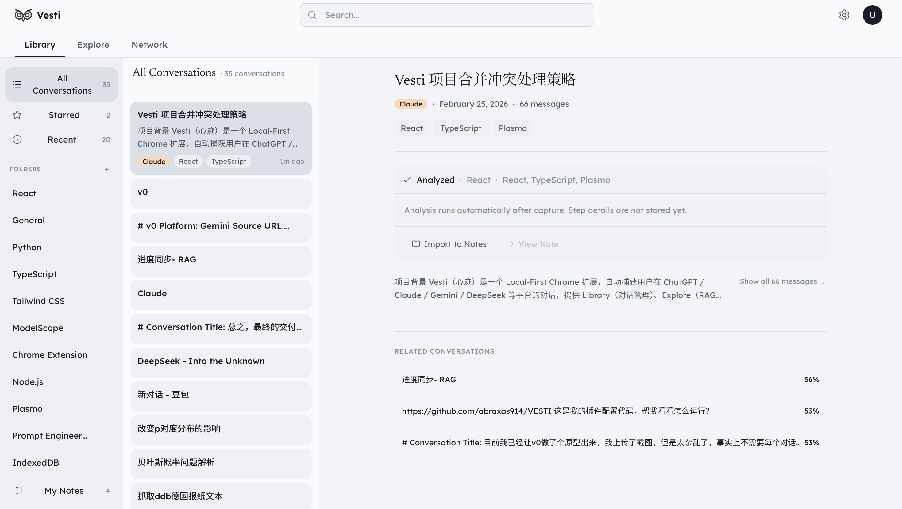
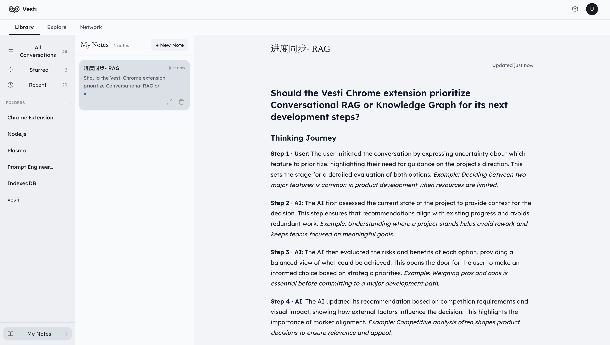
Launch path
Vesti is open source, architecture-led, and designed to make recall feel more rigorous than bookmarking a chat tab. The repository, release history, and technical shape are all visible from the first visit.